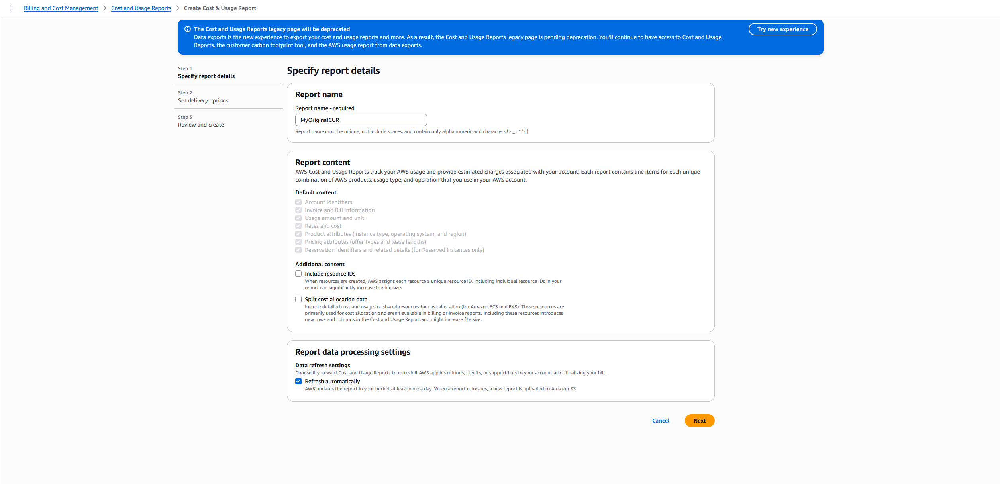
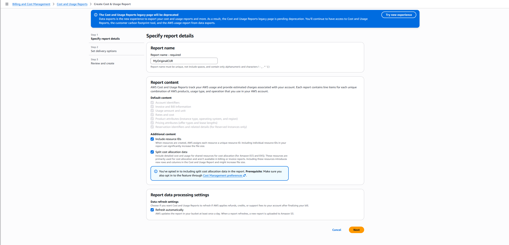
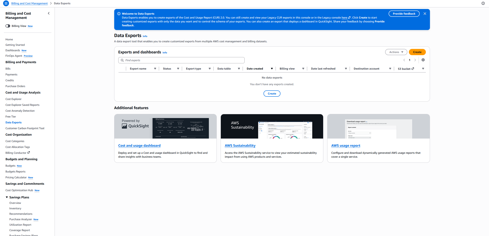
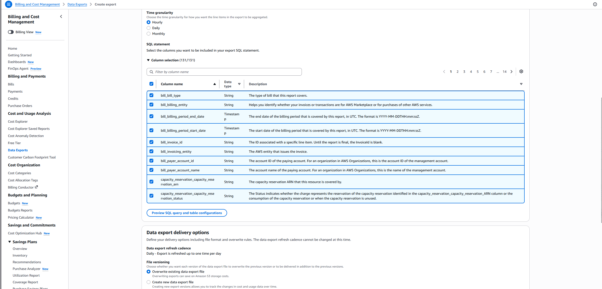
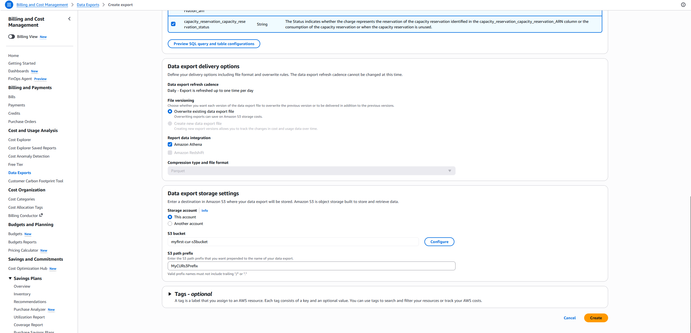
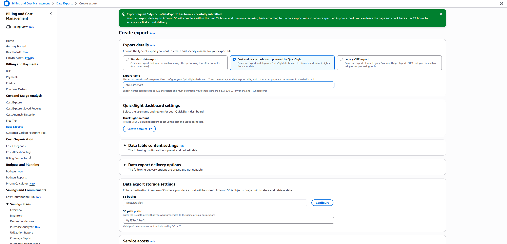

I've seen teams evaluate FinOps tools for months before enabling the billing export those tools eventually depend on.
This is the first guide in the AWS Cost Foundations series.
Prerequisites
- Billing permissions on the management account (or delegated billing admin access)
- An S3 bucket to receive the export (you can create one during setup)
If you use AWS Organizations, start from the management/payer account unless delegated billing administration is already configured.
Nothing else. No other services, tools, or infrastructure required.
Step 1: Open Data Exports

- Navigate to Billing & Cost Management → Data Exports
- Click Create
- If you see "Cost and Usage Reports" instead, that is the legacy page being deprecated. Look for "Data Exports" under Cost and Usage Analysis.
Step 2: Select Standard Data Export

- Select Standard data export (not QuickSight, not Legacy CUR)
- Under "Data table content settings", select CUR 2.0
- Give your export a name:
MyCostExportor similar. No spaces.
Step 3: Configure additional content

- Check Include resource IDs — so you can trace costs to individual resources later
- Check Split cost allocation data — breaks out shared ECS/EKS costs by container
- Check Refresh automatically — keeps data accurate when AWS applies retroactive credits or refunds
Step 4: Configure time granularity

- Select Daily granularity (one row per resource per day)
- Leave all 131 columns selected (the default). You cannot retroactively add columns to historical exports.
- Hourly produces far more data and is rarely needed at this stage. Monthly is too coarse.
Step 5: Configure delivery options

- File versioning: Overwrite existing data export file (saves S3 storage costs)
- Report data integration: Leave all unchecked (no Athena, no Redshift)
- Compression and format: Parquet (columnar, compressed, what every modern tool expects)
We are collecting data, not querying it. Integrations can be enabled later without recreating the export.
Step 6: Configure S3 destination

- Storage account: This account
- S3 bucket: your bucket name (e.g.
mycompany-billing) - S3 path prefix: a prefix like
cur/
If the bucket does not have the correct policy, click Configure. AWS generates and applies the required bucket policy automatically. It grants only the billing service write access.
Click Create.
Verification
Expected timing: AWS delivers the first export within 24 hours. Do not expect immediate data.
What success looks like: Parquet files in your S3 bucket, organized by billing period:
s3://mycompany-billing/cur/MyCostExport/...
After 24 hours, check your bucket. Files present means the export is working. Your billing history is now being preserved.
Common mistakes
- No billing permissions: The IAM user or role must have Billing console access. In an AWS Organization, this often requires a policy on the management account, not member accounts.
- Wrong bucket permissions: The S3 bucket needs a policy allowing
billingreports.amazonaws.comto write objects. Use the "Configure" button during setup to apply this automatically. - Waiting less than 24 hours: The first delivery takes up to 24 hours. An empty bucket immediately after creation is normal, not a failure.
- Confusing CUR 2.0 with FOCUS: Different formats, different column schemas. CUR 2.0 is native AWS. FOCUS is a multi-cloud FinOps standard. Both are valid. This guide uses CUR 2.0. Part 2 covers FOCUS.
What's next
Most teams delay this because it sounds bigger than it is.
Next in this series: CUR 2.0 vs FOCUS — which format to choose, when FOCUS matters, and whether you should run both.
Back to Cost Foundations